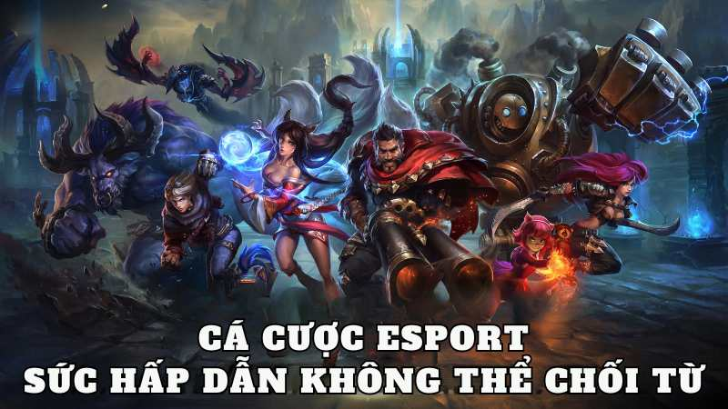

.png)
ĐÃ ĐĂNG TRÊN TRÊN THÁNG BA 8, 2024 BỞI Vwin
Với sự phát triển mạnh mẽ của ngành công nghiệp esport, cá cược trên các sân đấu ảo không chỉ là một trò giải trí mà còn trở thành một lĩnh vực thể thao chuyên nghiệp được chính thể thức cấp phép tại nhiều quốc gia. Nếu bạn đam mê trò chơi điện tử và mong muốn biến niềm đam mê đó thành nguồn thu nhập, thì cá cược thể thao điện tử có thể là cơ hội lớn dành cho bạn. Vậy, cá cược Esport là gì? Tất cả sẽ được Vwin giải đáp chi tiết trong bài viết dưới đây. Đừng bỏ lỡ nhé!
Trong thế giới của Esport, cá cược không chỉ là một hình thức giải trí mà còn là cách mà người chơi có thể tham gia dự đoán và đặt cược trên các trận đấu và giải đấu của các tựa game phổ biến. Cá cược Esport tập trung vào các sự kiện lớn của các trò chơi nổi tiếng như Liên Minh Huyền Thoại, DOTA 2, Starcraft, COD, KOG, CSGO, Warcraft hay PUBG.

Về Cá Cược Esport
Các tỷ lệ cược Esport thường có mức trả thưởng cao, cung cấp cho người chơi cơ hội nhận được số tiền lớn và tận hưởng tốc độ trả thưởng nhanh chóng. Các giải đấu lớn là nơi mà người chơi thường tham gia dự đoán và đặt cược, với các hình thức cược giống như trong các môn thể thao truyền thống như bóng đá, bao gồm cược đội thắng, cược tỷ số, và cược chiến công đầu tiên.
Cùng với việc đặt cược, người chơi còn có cơ hội nhận được tiền thưởng lớn nếu dự đoán đúng kết quả. Vì lẽ đó, cá cược Esport đang trở thành một xu hướng mới và nhận được sự quan tâm lớn từ cộng đồng người chơi cá cược tại Việt Nam.

Sự Hấp Dẫn của Cá Cược Esport
Cá cược Esport đang thu hút một lượng người chơi đáng kể nhờ vào những ưu điểm nổi bật của nó. Dưới đây là những ưu điểm cụ thể:
Hãy cùng Vwin khám phá sự đa dạng và phong phú của các loại kèo cá cược trong thế giới Esport, nơi mà những trận đấu đỉnh cao và kịch tính chờ đợi người chơi.

Các Loại Kèo Cá Cược Esport
Trong cá cược Esport, có nhiều loại kèo mà người chơi có thể lựa chọn, bao gồm:
Mỗi loại kèo có các hình thức và phần thưởng riêng, phụ thuộc vào từng tựa game cũng như sự lựa chọn của người chơi. Điều này tạo ra sự đa dạng và hấp dẫn trong việc tham gia cá cược Esport.
Để tham gia cá cược thể thao điện tử trên Vwin, quy trình thực hiện không phức tạp, và bạn có thể thực hiện theo các bước sau:
Bước 1: Đăng ký tài khoản cá cược trên Vwin.
Bước 2: Chọn trò chơi mà bạn yêu thích sau khi đăng ký thành công..
Sau khi tài khoản cá cược của bạn được xác nhận trên Vwin, bạn cần nạp tiền vào tài khoản của mình. Số tiền này sẽ được chuyển vào ví thể thao điện tử. Sau đó, bạn có thể truy cập vào mục Esport trên trang web và chọn trò chơi mà bạn muốn tham gia.
Bước 3: Tham gia đặt cược vào các trận đấu cụ thể.
Khi bạn chọn trò chơi mà bạn muốn tham gia, một tab mới sẽ xuất hiện. Ở đó, bạn có thể chọn lựa cách đặt cược của mình.
Bước 4: Nhập số tiền cược mà bạn muốn đặt.
Bước 5: Xác nhận đặt cược của bạn và chờ đợi kết quả. Sau trận đấu, kết quả thắng hoặc thua sẽ được thông báo trực tiếp trên tài khoản của bạn trên Vwin.
Những thông tin cơ bản về cá cược Esport và các loại kèo cược đã được trình bày cùng những cách chơi hữu ích để giúp người chơi chiến thắng. Hy vọng rằng những kiến thức này sẽ mang lại tự tin cho bạn khi tham gia đặt cược. Nếu bạn muốn khám phá thêm về trò chơi này, đừng ngần ngại mà hãy đăng ký tài khoản tại nhà cái Vwin ngay, để trải nghiệm và có cơ hội nhận những phần thưởng hấp dẫn!
Vwin được công nhận là nhà cái cá cược hợp pháp - an toàn. Vwin còn có trụ sở chính và cá cược trực tiếp tại Phú Quốc.